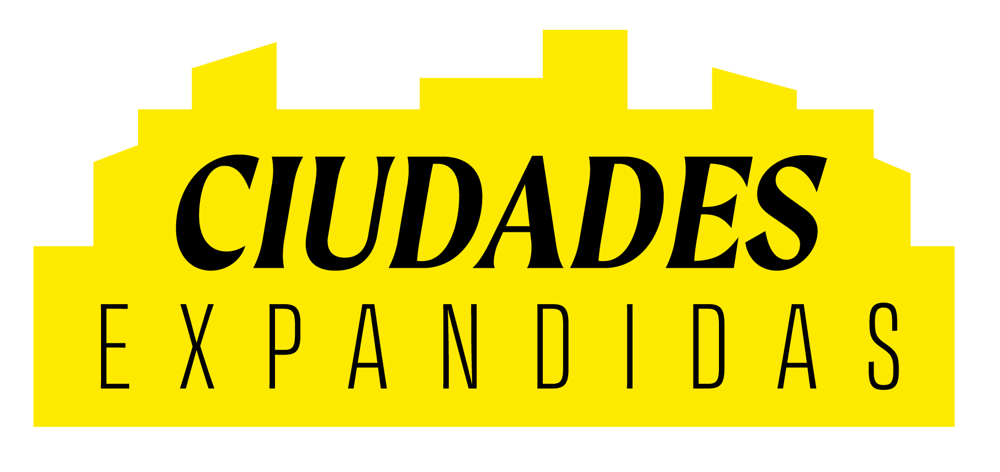

LA DISTANCIA ES LA MISMA
La experiencia no
Todos recorremos la misma ciudad
Pero no todos la vivimos igual.
ELIGE LA EXPERIENCIA
Ceguera
Silla de ruedas
Muletas
Has perdido la referencia visual
¿Cruzar ahora?
Encuentra la salida
REFLEXIÓN
Dependencia alta de referencias externas.
La ciudad fue diseñada para caminar
Cada paso exige atención
Mantén el equilibrio
LA DISTANCIA ES LA MISMA
La experiencia no
Las barreras están en el diseño de la ciudad.